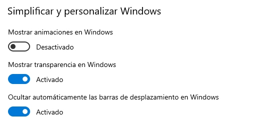

Practica accesibilidad
Galeria pokemons
Cada una de las imaganes tiene el atributo alt con el nombre de cada pokemon y un texto descriptivo para quien no los conozca, además la primera imagen advierte de cuantas imagenes consta la galeria lo cual es una buea práctica.


Animiaciones
Las animaciones pueden ser perjudiciales para algunas personas con sensibilidad fotosensible, la siguetne pelota se mueve a mucha velocidad y puede producir mareos y ataques epilecticos.
Pero he usado una media la query @media (prefers-reduced-motion), para desactivar la animación para las personas que en su ordenador tenga desactivadas las animaciones.
Para activar esta opcion en Windows 10: Configuración > accesibilidad > Pantalla > Mostrar animaciones en Windows.
Idioma
En la etiqueta de html hay que idicar el lenguaje con la etiqueta lang="es"
Si solo una parte del texto esta en otro dioma, se pondrá la etiquta lang en dicho contenedor.
A continuacioón, letra de una canción de Bruce Springsteen en ingles
I get up in the eveningp
And I ain't got nothing to say
I come home in the morning
I go to bed feeling the same way
I ain't nothing but tired
Man I'm just tired and bored with myself
Hey there baby, I could use just a little help
Formularios
Para los formularios hay que asociar la etiqueta "label" con su correspondiente input mediante la etiqueta "for=''" donde indicaremos el id del input